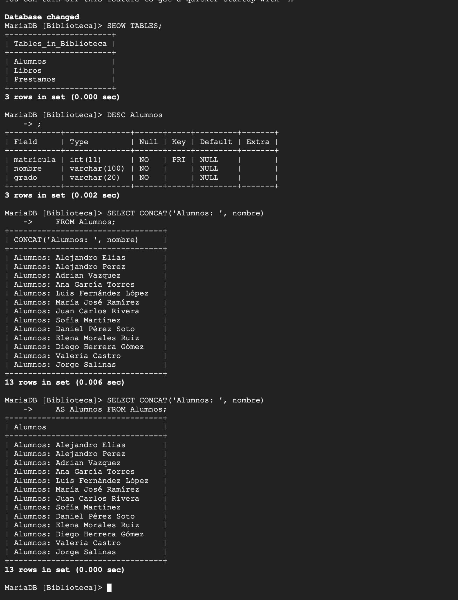
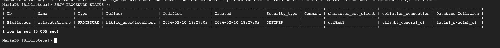
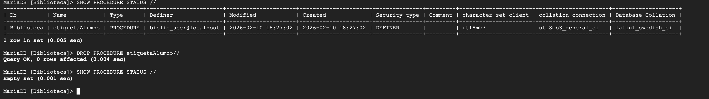

Actividad: Consultas y Stored Procedures en MariaDB (Biblioteca)
Índice
1. Objetivo
Documentar un flujo completo de trabajo en Biblioteca: revisar estructura, formatear resultados con SQL y administrar un procedimiento almacenado desde su validación hasta su eliminación segura.
2. Contexto
El ejercicio se realizó en consola MariaDB sobre la base Biblioteca, usando las tablas Alumnos, Libros y Prestamos. Se priorizó obtener salidas legibles y confirmar el estado real de objetos SQL antes de aplicar cambios.
3. Conceptos Técnicos
SHOW TABLES y DESCRIBE
SHOW TABLES permite confirmar qué tablas existen dentro de una base. DESC/DESCRIBE se usa para inspeccionar la estructura: tipos, llaves, nulos y atributos especiales.
CONCAT y alias
CONCAT() sirve para construir strings a partir de columnas. El alias (por ejemplo AS Alumnos) hace la salida más legible y presentable, especialmente cuando la expresión es larga.
Stored Procedures (Procedimientos almacenados)
Un procedimiento almacenado es código SQL guardado en el servidor y ejecutable bajo demanda. Esto permite reutilizar lógica, estandarizar operaciones y controlar permisos.
Delimitadores y Error 1064
En MariaDB, cuando se crean o administran procedures, es común cambiar el delimitador a // para que el servidor no corte el procedimiento al primer ;. Un uso incorrecto del delimitador o una instrucción mal cerrada suele terminar en ERROR 1064.
4. Desarrollo del Ejercicio
4.1 Verificación de tablas existentes
SHOW TABLES;4.2 Inspección de la tabla Alumnos
DESC Alumnos;4.3 Consulta con salida formateada usando CONCAT
SELECT CONCAT('Alumnos: ', nombre)
FROM Alumnos;
SELECT CONCAT('Alumnos: ', nombre) AS Alumnos
FROM Alumnos;4.4 Verificación de Stored Procedure existente
SHOW PROCEDURE STATUS //4.5 Diagnóstico: error de sintaxis (ERROR 1064)
Se presentó un ERROR 1064 al ejecutar una instrucción relacionada con el procedure. Lo clave fue verificar estado real antes de actuar con SHOW PROCEDURE STATUS //.
4.6 Eliminación del procedure y verificación final
SHOW PROCEDURE STATUS //
DROP PROCEDURE etiquetaAlumno//
SHOW PROCEDURE STATUS //5. Evidencias de Ejecución
- Listado de tablas en Biblioteca y estructura de Alumnos con
DESC. - Consultas con
CONCATpara formatear salida, con y sin alias. - Consulta de procedimientos con
SHOW PROCEDURE STATUS //mostrandoetiquetaAlumno. - Registro del
ERROR 1064y verificación posterior del estado del procedure. - Eliminación del procedure con
DROP PROCEDUREy confirmación conEmpty set.
Evidence 1

Listado de tablas, estructura de Alumnos y consultas con CONCAT (con y sin alias).
Evidence 2

Validación del procedure etiquetaAlumno en Biblioteca.
Evidence 3

Error 1064 y confirmación posterior de estado con SHOW PROCEDURE STATUS //.
Evidence 4

DROP PROCEDURE etiquetaAlumno// y verificación final con Empty set.
6. Calidad del Trabajo y Buenas Prácticas
- Validación antes de actuar: uso de
SHOW PROCEDURE STATUSpara confirmar estado real del procedure. - Salida legible: alias en expresiones con
CONCATpara una entrega más clara. - Control de objetos: eliminación explícita del procedure con
DROPy verificación posterior. - Evidencia verificable: capturas con comandos y outputs completos.
7. Preguntas Frecuentes
¿Para qué correr SHOW TABLES al inicio?
Funciona como verificación rápida de contexto: confirma base activa y evita ejecutar consultas sobre objetos inexistentes.
¿Qué ventaja práctica tiene usar alias en CONCAT?
Mejora la presentación de resultados en reportes y bitácoras, porque evita encabezados largos generados por la expresión completa.
¿Qué causa más comúnmente el ERROR 1064?
Delimitador mal configurado, sentencia incompleta o error de sintaxis puntual en SQL.
¿Cómo confirmar que un procedure existe?
Con SHOW PROCEDURE STATUS // filtrando por base y nombre del procedimiento.
¿Qué valida la salida “Empty set” al final?
Que el procedure ya no está registrado en el catálogo del servidor para esa base de datos.
8. Conclusiones
La práctica confirmó que una buena administración en MariaDB combina diagnóstico y ejecución ordenada: inspeccionar, consultar, validar y luego modificar. El ERROR 1064 fue útil para reforzar disciplina de revisión sintáctica antes de cualquier operación sobre procedures.
9. Referencias APA
10. Historial de Versiones
| Versión | Fecha | Cambios | Autor |
|---|---|---|---|
| v1.0 | 2026-02-23 | Versión inicial con desarrollo y evidencias. | Eugenio E. |
| v2.0 | 2026-02-23 | Estructura completa al estándar del portafolio: FAQ, referencias APA, historial y bitácora. | Eugenio E. |
11. Bitácora de Defensa Oral
Respuesta: Porque validar primero evita borrar objetos incorrectos y documenta el estado real antes del cambio.
Respuesta: Que delimitador y sintaxis deben revisarse de forma explícita; depurar por prueba y error sin diagnóstico retrasa la solución.
Respuesta: La secuencia SHOW → DROP → SHOW y la salida final con Empty set.
12. Autenticidad e Integridad Académica
Declaro que los comandos y resultados documentados corresponden a ejecuciones reales en MariaDB, y que las evidencias presentadas reflejan el proceso completo, incluyendo errores y correcciones.